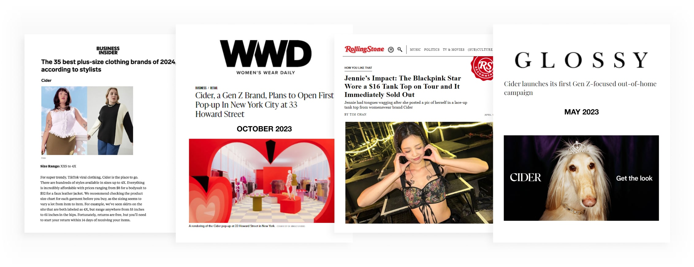
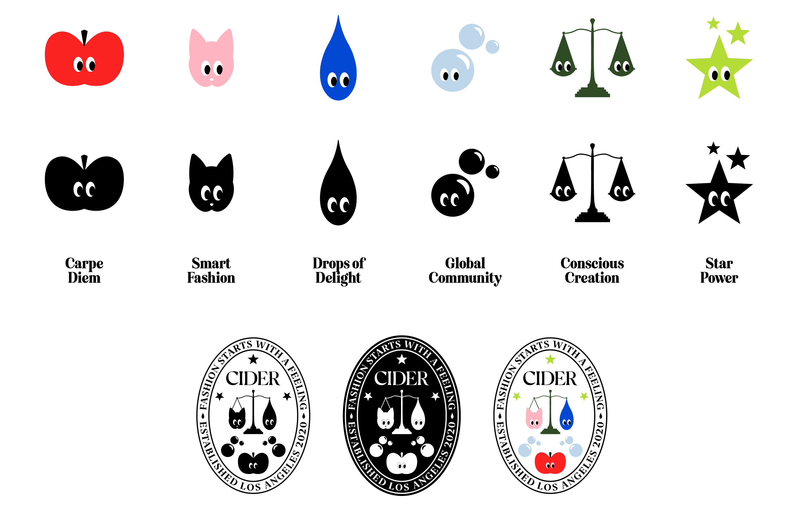
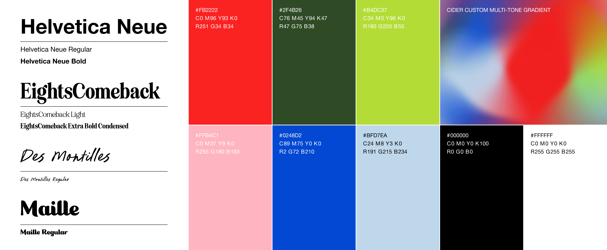
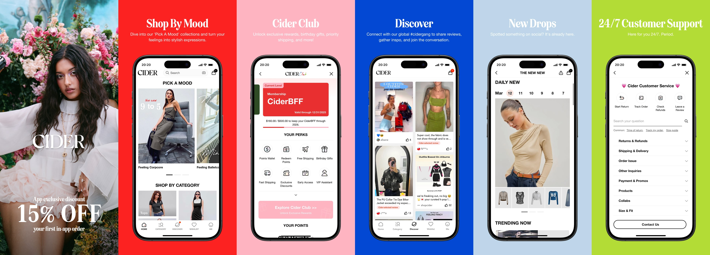
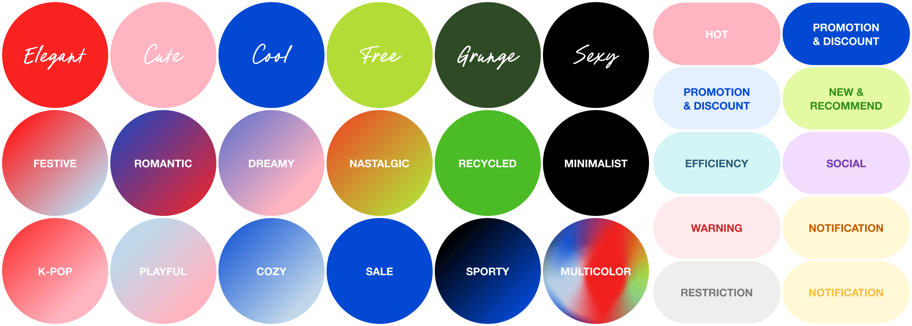
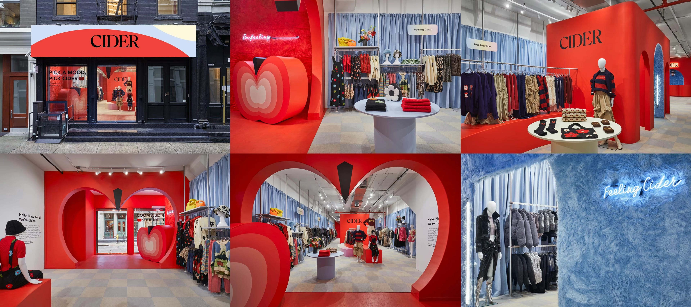

Loading...
Loading...
“We make everyday statement pieces for everyone, everywhere.”
Cider is a global fashion brand that has rapidly grown since its founding in 2020, becoming popular among Gen Z and young shoppers around the world. Known for its trendy, affordable pieces and strong social media presence, Cider has built a vibrant community focused on making everyday statement pieces for everyone, everywhere.
Cider started with a playful and whimsical spirit, offering a wide mix of styles to match young consumers’ ever-changing tastes and moods. Over time, the brand has been loved and recognized by consumers around the world. However, to build a stronger and more unified brand identity, Cider is now gradually moving away from this highly eclectic approach.
As the brand expanded rapidly, its identity also became increasingly muddled. Designers recognized the need for a more cohesive and elevated direction to better reflect Cider’s core spirit — still playful and inclusive, but more refined and clearly defined.
The design team focused on streamlining visuals, aligning messaging with Cider’s core values, and strengthening how the brand talks about its sustainable practices.
Cider was built from an organic energy that emerged during the pandemic. But after rapid global growth, the brand narrative became disjointed and unclear. To continue inviting more shoppers into the Cider world and expand its audience beyond Gen Z, the brand needed to evolve.
The goal is to increase brand awareness among Gen Z, make customers feel good about shopping Cider, and ensure that Cider’s presence reflects a more unified and elevated identity.
The design team introduced a more unified visual language by defining consistent typography and a standard color system to reinforce Cider’s evolving identity. Colors were carefully assigned to represent different brand moods, and specific color intentions were also integrated into UI and UX touchpoints to guide user perception in a cohesive way.
As the overall brand refresh took shape, every element—from photography and graphic design to product materials and the most direct touchpoint, UI design—was redesigned under a unified framework. Through this extensive effort, Cider delivered a noticeably improved app experience, streamlined the codebase, and ultimately received positive feedback both in user behavior and sales data.
Cider’s First NYC Pop‑Up: A Physical Leap for a Digital Star
Cider’s First NYC Pop‑Up
Cider opened its first U.S. pop-up in SoHo, New York, in late 2023, turning its playful digital identity into an immersive physical space. Designed with bold colors and interactive details, the store lets shoppers experience Cider’s whimsical spirit in real life while reinforcing a more cohesive and curated brand image.